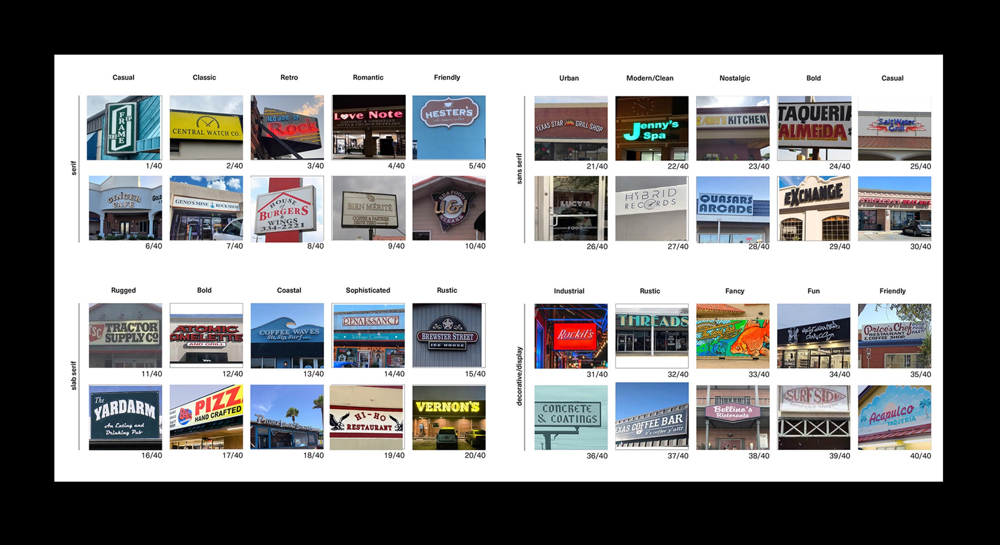
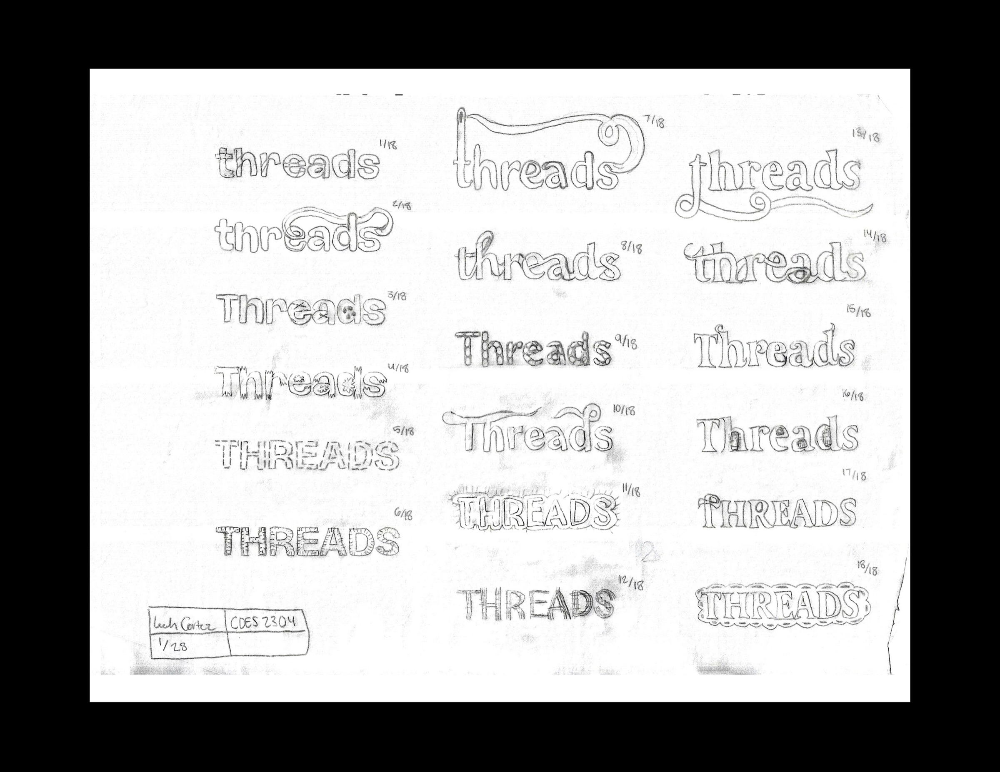
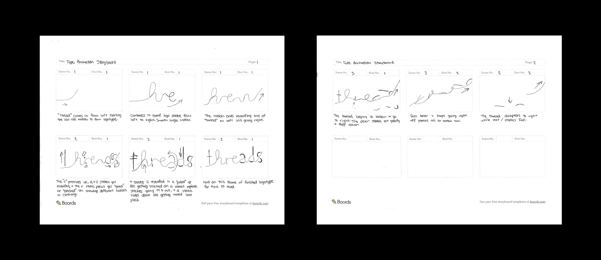
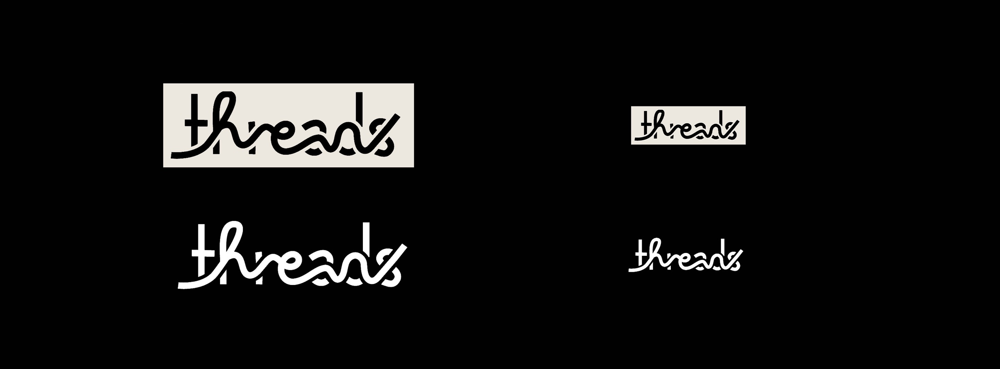
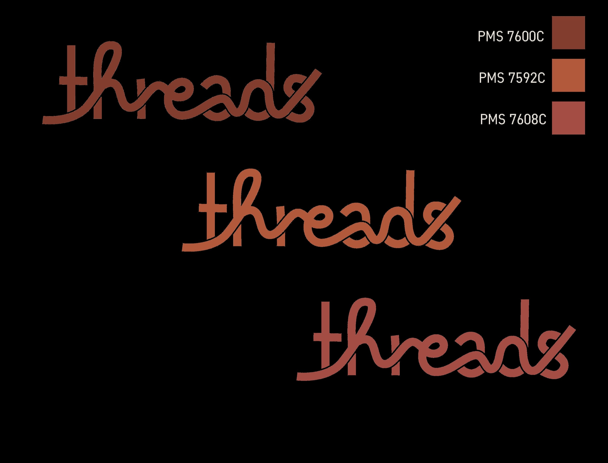
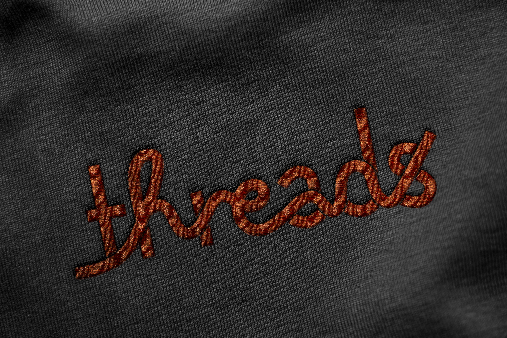
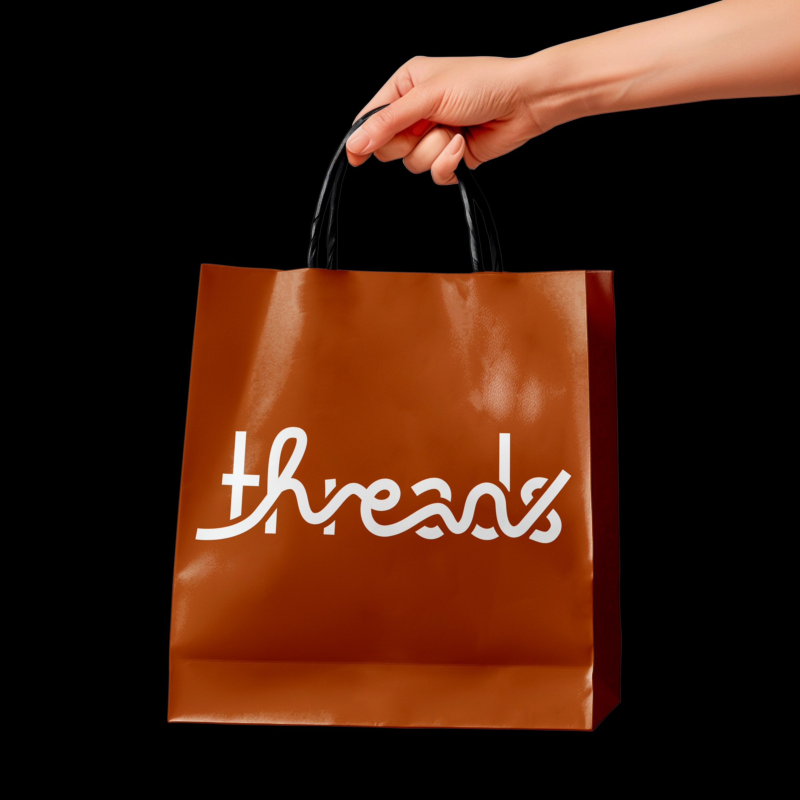
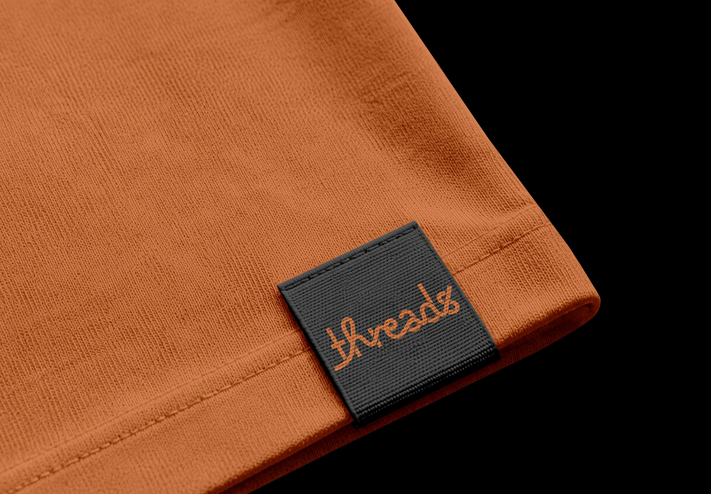
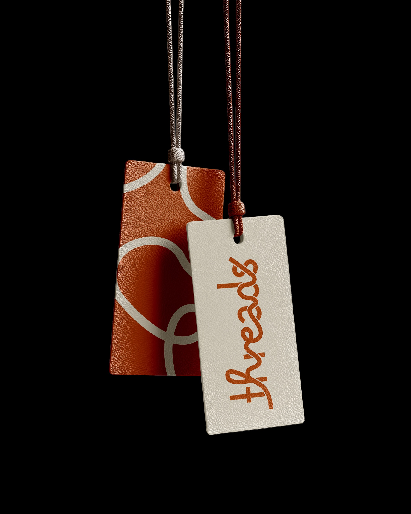

Threads
A logotype for a youth clothing retailer, drawn as one continuous thread, then animated.
- Role
- Graphic design, motion design
- Deliverables
- Static logotype, woven graphic elements, animated logotype
Redesign the logotype for Threads, a clothing retailer for young people, so the name, the clothes and the mark all connect.
Continuous, thread-like strokes for the main mark, with woven secondary strokes that point to the textile without spelling it out.
A static logotype that sets the shape, and an animated version that keeps it recognizable in motion.
Fifty logotypes, sorted.
I looked at 50 different logotypes and categorized them, to see which kinds of letterforms and structures other brands lean on. That gave me a map of what already exists, and where Threads could stand apart.

One continuous line.
I sketched the letters as a single thread that loops and crosses itself, testing how far a stroke could bend before the word stopped reading.







